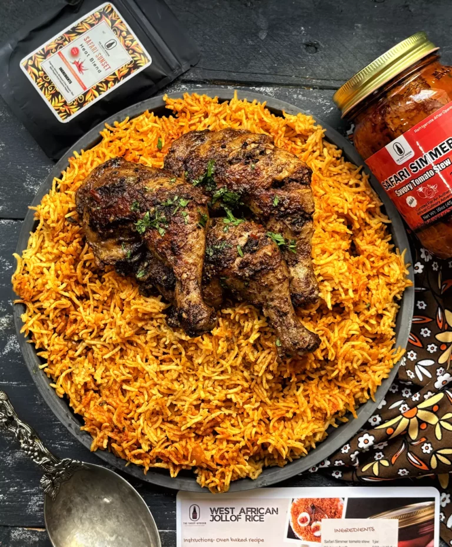

Pilau is a delicious Kenyan dish made with rice, chicken, and a blend of aromatic spices.
commonly originated in the coastal regions of Kenya and Tanzania.

Pilau with a juicy grilled chicken
STEPS
Ingredients:
2 cups of basmati rice
1 kg of chicken pieces
2 onions, finely chopped
3 cloves of garlic, minced
1 tablespoon of ginger, grated
2 tablespoons of pilau masala (spice mix)
1 teaspoon of turmeric powder
1 teaspoon of cumin seeds
4 cups of chicken broth or water
Salt to taste
Vegetable oil for cooking
Instructions:
Rinse the basmati rice under cold water until the water runs clear. Soak the rice in water for about 30 minutes, then drain.
In a large pot, heat vegetable oil over medium heat. Add the cumin seeds and let them sizzle for a few seconds.
Add the chopped onions and sauté until they turn golden brown.
Add the minced garlic and grated ginger, and cook for another minute until fragrant.
Add the chicken pieces to the pot and brown them on all sides.
Sprinkle in the pilau masala, turmeric powder, and salt. Stir well to coat the chicken with the spices.
Pour in the chicken broth or water, bring to a boil, then reduce the heat to low. Cover and simmer for about 20-25 minutes, or until the chicken is cooked through.
Add the soaked and drained rice to the pot. Stir gently to combine with the chicken and spices.
Cover the pot again and cook on low heat for about 15-20 minutes, or until the rice is tender and has absorbed all the liquid.
Once done, fluff the rice with a fork and serve hot with your favorite side dishes or salad.